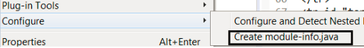
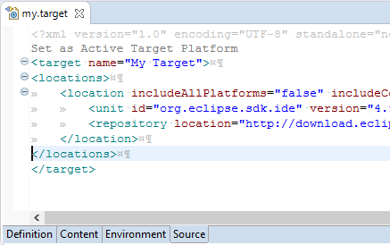
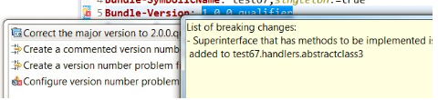

Dialogs, Wizards and Views

However, the module-info.java file that is created and the manifest file in the project may not be synchronized. A warning dialog is shown to inform users about this issue.

Editors

API Tools


This option is disabled by default.
The error/warning is controlled by the existing Missing API baseline option in Plug-in Development > API Baselines preference page.